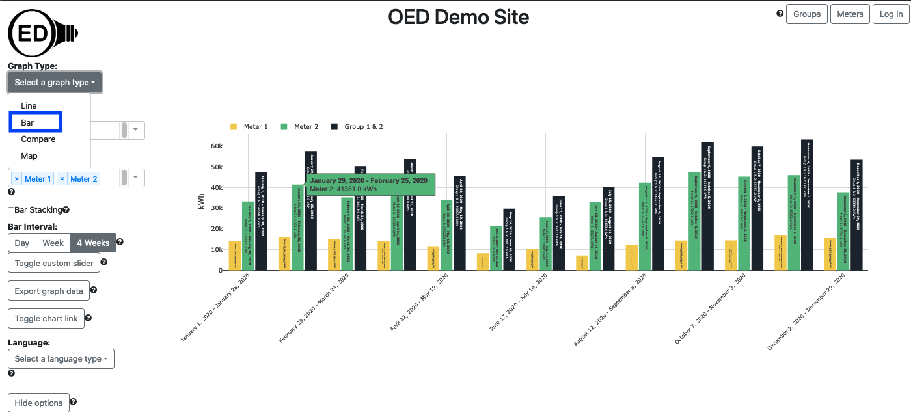
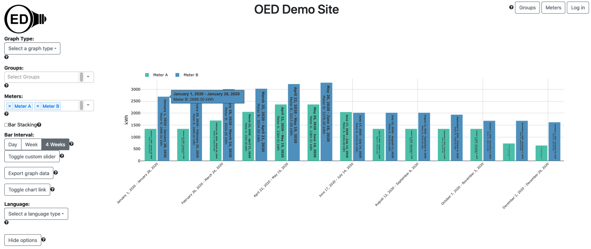
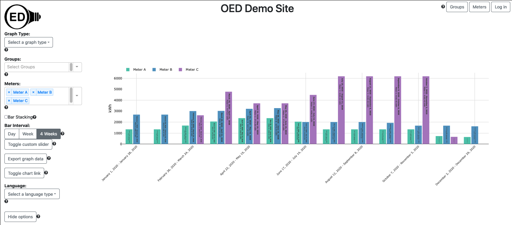
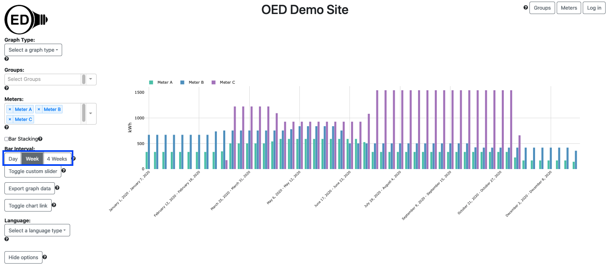
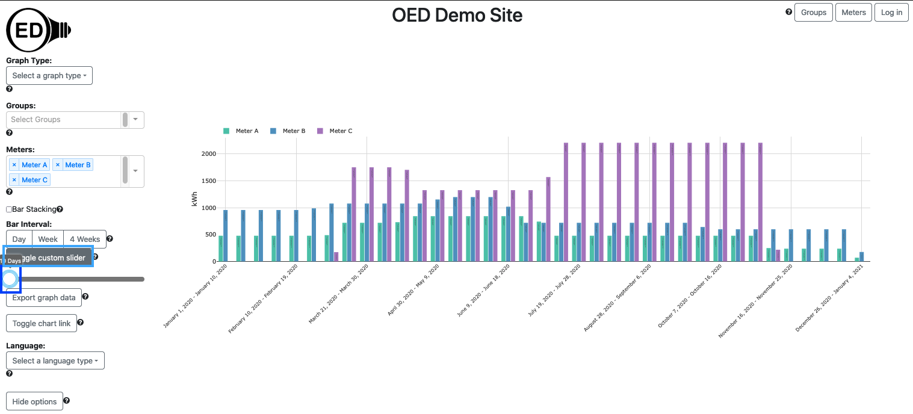
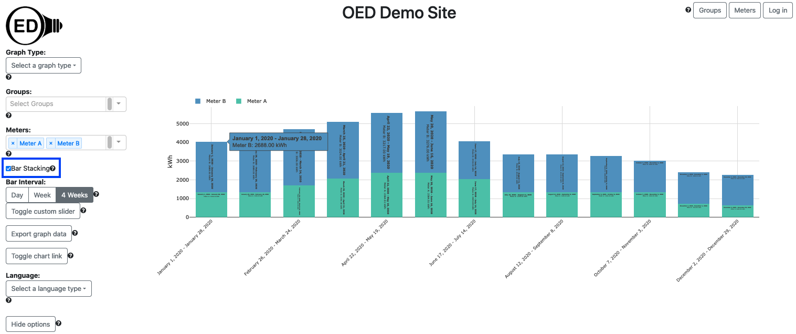

OED Documentation
Bar Graphic
Version V0.8.0
The latest version of this page is V1.0.0.
Documentation overview
User documentation
Information
Meters/Groups
Other Features
Admin documentation
Documentation versions for this page
Overview
A bar graphic shows each meter and group as a series of fixed time interval bars showing usage across time. The following figure shows a bar graphic of two meters (Meter 1 and Meter 2) and one group (Group 1 & 2) where the group contains the two meters so the sum of the values of the meter bars equals the group bar value. Each bar will show the value and dates if the bar is wide enough (cannot easily see the actual values in the following figure) and you can also get a larger hover value by placing the curser over the bar (as shown). Each bar represents four weeks of data as whole days so it is the total usage of the indicated meter/group for those four weeks. Since it is total usage, the units are for energy, e.g., kWh for electricity. The x-axis gives the range of days, inclusive, that each bar represents. To get this graphic, you click the "Bar" choice (highlighted with a blue box) from the "Select a graph type" dropdown menu. 
A bar graphic can show an arbitrary choice and number of meters and groups. As described below, you can control the time frame (dates shown) on the bar graphic.
Usage
You select the meters and/or groups to graph in the usual way. OED will display each meter and group as a series of uniquely colored bars. Each bar represents the chosen time interval for the bars where the inclusive dates are shown below each set of bars. The bars for all meters and groups are kept together for the same range of time. For this section the graphics use synthetic data since values are easier to understand. In this data, the meters have a constant value for long periods of time. Also, we will often use meters in these sample figures but the same ideas apply equally to groups. The following figure shows the data for Meter A and Meter B. 
The value of the bar can be easily calculated since the values vary slowly with time. If you look at the line graphic you can see that Meter B has a value of 4 kW for the first two months. Since the bar is for 4 weeks or 28 days this represents 28 days x 24 hours/day = 672 hours. This gives 4 kW x 672 hours = 2688 kWh as seen in the first bar for Meter B and also shown in the hover value for the first bar.
If different meters and groups have data for different time ranges for data available then some bars may not be shown in some time range(s). The next figure shows this where Meter C does not span the full range of time on the graph and has values missing at the beginning and end of the year. You can see date range by looking at the line graphic. 
You can select the time range in days for each bar displayed in two ways. The first involves clicking one of the predefined time ranges (highlighted with a blue box in the next figure) where the choices are "Day", "Week" or "4 Weeks". The figure below is the result of clicking on the "Week" choice (it was "4 Weeks" in the figures above). Note that using bars with smaller time scales shows more accurately where the data is missing for Meter C. 
The second way to change the bar time range is to click on the "Toggle custom slider" button (highlighted with a light blue box in the next figure) to reveal the slider. You can then click and hold the circle (highlighted with a blue box) to drag it to the number of days desired where the allowed range is 1 to 365 days. Note the custom slider value changes to the value of a preset range button when it is clicked. In the figure below, the "Toggle custom slider" button was clicked and the circle dragged to 10 days. 
Note that selecting a different time range in the first day (clicking on one of the three choice) also changes the range on the map graphic but using the slider does not change the values on the map graphic.
The range of dates used in the bar graphic correspond to the ones selected/used in the line graphic. Thus, if you want to change the range of dates included, you need to follow the steps and do it on the line graphic page. Note that the time range is considered the full time (not just the zoomed in time) so you will see that unless you redraw to reduce the time range.
Bar Stacking
There are two types of bar graphics supported. The first is where each meter/group is its own bar. That is what has been discussed so far. The second is a stacked bar graphic. In this case, each time interval has a single bar with all the meters/groups represented inside this bar as sub-bars. The height of each sub-bar for a given meter/group is the proportion of the usage for this meter/group compared to the total for all meters/groups displayed. The following figure shows bar stacking where you get this option by checking the box next to the "Bar Stacking" label (highlighted with a blue box). 
Details
Colors of bars
The color of each bar or sub-bar is the same as that used in the line and map graphic. The color choice is described here.
Exporting graph data
You can export the data represented on a bar graphic. See the export help page for further information.
Why 4 weeks?
See the discussion in compare graphics about why OED uses 4 weeks rather than one month.
Graphic time range
You can set the time range of each bar to any allowed range. This means it may be possible to create a bar graphic with a single bar for each meter/group where it is longer than the time of available data. In a somewhat related item, note that if a bar contains time where the meter/group is missing data then the total usage is likely to be lower than usual.
Bars with limited data
Since the time range for each bar is fixed, the last/latest time bar may partly include time for which there is no data. For example, if you have a meter with 10 weeks of data and use 4 week time intervals for each bar, the third/last bar will have 2 weeks of data (the first two bars took up 8 eights) in the final bar of 4 weeks time interval. This can be confusing to the user. We are working on this issue and will address it in a future release of OED.
Default bar type
By default, a bar graphic will begin by not being stacked. The site administrator can change this behavior so the default is stacked. In either case the user of OED can change the default during usage.
Format of dates and times
See explanation in line graphics for why data and time format varies with displayed language.